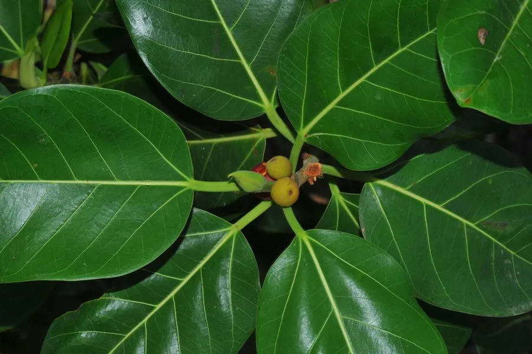

乔木 · 植物界
高山榕 Ficus altissima

中国南方常见的常绿大乔木，气生根发达、树冠庞大，常作为行道树与园林景观树，也是雨林中的“绞杀”树种。
- 分类
- 门被子植物门纲木兰纲目蔷薇目科桑科属榕属
- 栖息环境
- 海拔 800 米以下的热带亚热带地区，喜高温多湿
- 地理分布
- 中国广东、广西、福建、海南、云南等地，东南亚也有分布
- 保护级别
- 暂无评估；中国未列入国家重点保护野生植物名录
物种志
高山榕为常绿大乔木，高可达 30 m，树皮灰褐色、平滑；叶片互生，厚革质，椭圆形至卵状椭圆形，表面深绿有光泽。枝条上生有气生根，垂落后可形成支柱根；隐头花序生于叶腋，榕果近球形，成熟时橙红色至黄色。
高山榕分布于中国广东、广西、福建、海南、云南等地及东南亚，喜高温多湿、光照充足，适宜深厚肥沃的酸性土壤，不耐寒。树冠庞大、气生根发达，是南方城市重要的行道树与园林景观树种；在热带雨林中，高山榕常从附生开始、气生根缠绕寄主，最终形成“绞杀”现象。木材可制器具，树皮纤维可制绳，榕果是鸟类与昆虫的食物。
形态与习性
- 株高可达 30 m，树冠庞大
- 花果期隐头花序，全年可陆续结果
- 果型榕果近球形，成熟时橙红色
- 光照喜光，不耐长期荫蔽
- 水分喜湿润，怕积水
- 主要用途行道树与景观树、木材制器具、榕果为鸟类食物
趣味知识
- 高山榕的气生根垂落后可形成支柱根，支撑庞大的树冠。
- 高山榕在热带雨林中常缠绕寄主树木生长，形成“绞杀”现象。
- 高山榕的榕果成熟时橙红色，是鸟类与昆虫喜爱的食物。